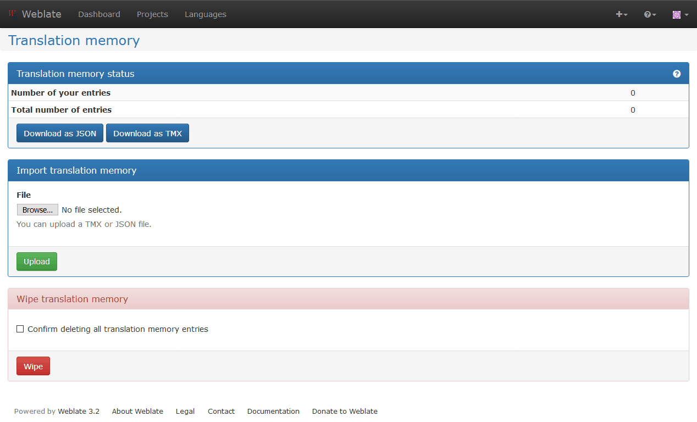

Translation Memory¶
バージョン 2.20 で追加.
Weblate comes with a built-in translation memory. It provides you matches against it as a Machine translation or in Automatic translation.
注釈
Currently the content of the translation memory is not updated by Weblate itself, but you can use it to import your existing TMX files and let Weblate provide these as a machine translations. This will be changed in future release to provide full translation memory experience within Weblate.
For installation tips, see Weblate Translation Memory, however this service is enabled by default.
Translation memory scopes¶
バージョン 3.2 で追加: The different translation memory scopes are available since Weblate 3.2, prior to this release translation memory could be only loaded from file corresponding to the current imported translation memory scope.
The translation memory scopes are there to allow both privacy and sharing of translations, depending on the actual desired behavior.
Imported translation memory¶
You can import arbitrary translation memory data using import_memory
command. The memory content will be available for all users and projects.
Per user translation memory¶
All user translations are automatically stored in personal translation memory. This memory is available only for this user.
Per project translation memory¶
All translations within a project are automatically stored in a project translation memory. This memory is available only for this project.
Managing translation memory¶
User interface¶
バージョン 3.2 で追加.
There is basic user interface to manage per user and per project translation memories. It can be used to download, wipe or import it.
The downloads in JSON are useful for Weblate, TMX is provided for interoperability with other tools.
Management interface¶
There are several management commands to manipulate with the translation memory content, these operate on memory as whole not filtered by scopes (unless requested by parameters):
dump_memory- Exporting the memory into JSON
import_memory- Importing TMX or JSON files into the memory
list_memory- Listing memory content
delete_memory- Deleting content from the memory